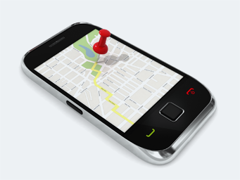

Asset Tracker
-
VEHICLE TRACKING DEVICE
ADAPT's Hub Lite empowers retailers to digitally track their moving equipment, inventory and assets using long-life battery powered smart devices—thereby preventing theft, and other related loss.
-
The Problem
Supermarkets and other retail stores have many high traffic assets which freely move around (and beyond) their facilities. These include shopping trolleys, bins, pallets, and other warehouse equipment. Keeping track can pose a major headache for businesses. Customers often remove retail trolleys from the premises—onto the street, and sometimes even back to their apartment!
-
ADAPT HUB Lite to the Rescue
A prototype of the ADAPT HUB Lite specifically designed to retro-fit to moving assets is being deployed in Queensland to track a trial fleet of trolleys. Using narrowband radio technology and geo-fencing algorithms, the device alerts the store team every time a trolley moves out of the facility geo-fence area. The device also provides GPS co-ordinates, pinpointing the trolley's precise location, enabling staff to track and retrieve, thus saving the business writing off valuable assets. The trial will be carried out for 90 days, and include testing under all the operational scenarios.
-
Today
Currently underway, the results from the trial are being analysed through ADAPTer (ADAPT'S proprietary data analysis software). The retailer is also looking to utilize the data sensors of HUB Lite for enriched analytics on fridges and other assets—particularly for temperature monitoring, and maintenance of cold-chain and sensitive food products. Additional devices are being designed to tackle the complex tracking of larger operational warehouse assets.